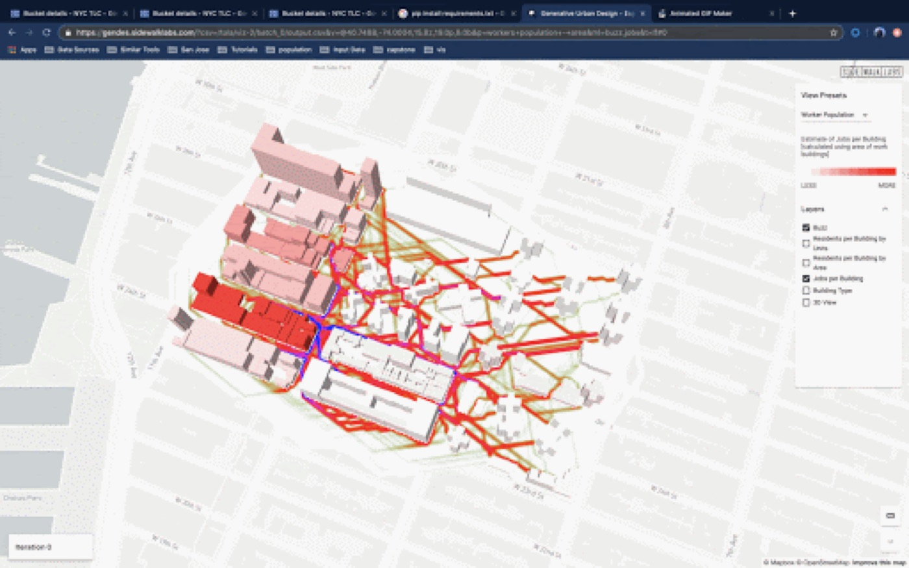

I design and build software for the built environment.
I’m a senior UX engineer and computational designer on Google Earth. Before software, I studied architecture and urban planning at Columbia. Now I build the tools that planners, architects and builders use to understand a site before they change it.
Selected work
2019–2026
Drag to select
Draw a box on the map to select as many places as you want at once. Before this, Google Earth only let you pick them one at a time.
Google Earth · Design, front end
Cut and fill
Draw a site and see how much earth has to be dug out or brought in to level it, and where. One of four terrain analysis tools in Google Earth.
Google Earth · Back end
Traffic signal level of service
Google Research’s vehicle-delay data, turned into an A–F grade for every signalized intersection, hour by hour. Part of a launch that signed up 470+ paying professional users.
Google Earth · Data product, UI
Solar layouts for real roofs
Panel layouts that work around roof shapes, vents, HVAC units and fire-code setbacks, with cost and output for any building or parking lot.
Google Earth · Computational design lead
Mass-timber buildings, generated
I grew the software that generates Intelligent City’s mass-timber housing, and measured the materials, cost and emissions of every design it made.
Intelligent City · Computational design
Election data for 5M voters
I checked polling places and charted ballot trends for a nonpartisan voter guide used by more than 5 million people in 2020.
BallotReady · Data visualization
Beyond the Blue Dot
A web tool that turns census data into short stories about the people who live and work in a place. My urban planning capstone, built for Sidewalk Labs.
GSAPP × Sidewalk Labs · UX, prototyping
Estimating pedestrian activity
A pipeline that estimates street-level foot traffic from census data and feeds it straight into generative design tools.
Sidewalk Labs · Computational designEarlier work
Columbia GSAPP, 2016–19wastespaceA recycling hub that creates jobs for women in Vieques, Puerto Rico. |
Architecture · 2019 | |
design for who?A Dumbo library designed around who can walk to it. |
Architecture, mapping · 2018 | |
Citi Bike accessWho Citi Bike reaches, and who it leaves out. |
GIS · 2017 | |
Predicting urban sprawlA model trained on satellite images of Cairo, Dubai and Wuhan. |
Machine learning · 2016 | |
Airbnb analysisHow hosts and guests describe the same neighborhoods differently. |
Data visualization · 2017 |


About
I came to software from architecture and urban planning, and the built environment is still what I care about most. I want my tools to keep getting closer to the people who design and construct it.
Experience
- Google, Senior Computational Designer (UX Engineer)Google Earth. Drag to select, cut and fill, traffic signal level of service, solar studies, and the first designs for inundation history.2022–now
- Intelligent City, Computational DesignerVancouver. Parametric mass-timber housing.2021–22
- Columbia GSAPP Center for Spatial Research, Graduate Researcher2017–20
Education
- Columbia GSAPP, Master of Architecture and MS Urban Planning2020
- Barnard College, Columbia University, BA Architecture2016
Teaching and mentoring
- Mentorship Program, Columbia GSAPPMentor to an MS Urban Planning student, class of 20272026–27
- Guest Lecturer, Columbia GSAPPPrototyping in Urban Tech, taught by James Piacentini2026
Recognition
- Honorable Mention, Analytics, Geo Makers Hackathon at GoogleCame up with the idea and built the prototype with two teammates2025
Mentions
- Three degrees later, this graduate is ready to move onColumbia News · 2020
- Can fixing parking rules make Honolulu more affordable?Civil Beat · 2020
- Researcher, Homophily: The Urban History of an AlgorithmChicago Architecture Biennial · 2019
- 13 proposals to boost resilience in Vieques, Puerto RicoColumbia Climate School · 2019
- Researcher, Living in America: Frank Lloyd Wright, Harlem & Modern HousingBuell Center · 2017
Say hello.
Working on something for the built environment? I’d love to hear about it.